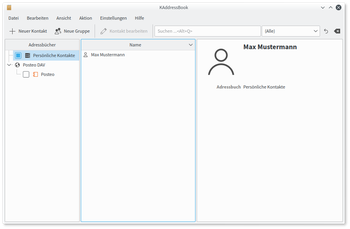
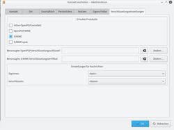

KAddressBook
Dieser Artikel wurde für die folgenden Ubuntu-Versionen getestet:
Ubuntu 16.04 Xenial Xerus
Ubuntu 14.04 Trusty Tahr
Zum Verständnis dieses Artikels sind folgende Seiten hilfreich:
KAddressBook  ist die Adressverwaltung von KDE und Teil der KDE-PIM-Suite Kontact. Neben Namen, Adressen und Telefonnummern können in KAddressBook auch Bilder, Geburts- und Jahrestage, Informationen über Instant Messaging Adressen oder über spezielle Kryptographie-Informationen für den Austausch verschlüsselter Mails hinterlegt werden. Ein Import und Export der Informationen in vielen verschiedenen Dateiformaten ist ebenfalls möglich.
ist die Adressverwaltung von KDE und Teil der KDE-PIM-Suite Kontact. Neben Namen, Adressen und Telefonnummern können in KAddressBook auch Bilder, Geburts- und Jahrestage, Informationen über Instant Messaging Adressen oder über spezielle Kryptographie-Informationen für den Austausch verschlüsselter Mails hinterlegt werden. Ein Import und Export der Informationen in vielen verschiedenen Dateiformaten ist ebenfalls möglich.
Installation¶
KAddressBook ist bei einer Kubuntu Standardinstallation bereits enthalten und kann ansonsten über die Paketquellen installiert [1] werden:
kaddressbook
 mit apturl
mit apturl
Paketliste zum Kopieren:
sudo apt-get install kaddressbook
sudo aptitude install kaddressbook
Nach der Installation kann KAddressbook als alleinstehendes Programm über das Menü "Büroprogramme → Kontakteverwaltung" gestartet werden.
|  |
| KAddressBook als alleinstehendes Programm |
Integration in Kontact¶
Zur Verwendung von KAddressBook innerhalb von Kontact muss in der Regel keine Anpassung vorgenommen werden. Das Programm wird automatisch integriert. Am linken Rand auf der Menüleiste von Kontact sollte standardmäßig die Schaltfläche "Kontakte" vorhanden sein. Falls diese Schaltfläche fehlt, wurde dieses Modul deaktiviert. Zur Aktivierung des Moduls  im Menü auf "Einstellungen → Kontact einrichten ...". Dort muss in der Baumansicht auf der linken Seite ein Haken vor den Punkt "Kontakte" gesetzt werden.
im Menü auf "Einstellungen → Kontact einrichten ...". Dort muss in der Baumansicht auf der linken Seite ein Haken vor den Punkt "Kontakte" gesetzt werden.
Kontakte verwalten¶
Adressbuch erstellen¶
Zum Einbinden eines neuen Adressbuchs  klickt man in der Spalte, in der die bereits vorhandenen Adressbücher aufgelistet sind, auf die freie Fläche und wählt "Adressbuch hinzufügen ...". Aus den angezeigten Adressbuchvarianten wählt man den gewünschten Typ aus:
klickt man in der Spalte, in der die bereits vorhandenen Adressbücher aufgelistet sind, auf die freie Fläche und wählt "Adressbuch hinzufügen ...". Aus den angezeigten Adressbuchvarianten wählt man den gewünschten Typ aus:
KDE-Adressbuch (herkömmlich) - Lädt Daten aus einer herkömmlichen KDE-Adressbuch-Ressource. Es öffnet sich ein Assistent, der dabei hilft eine "alte" KDE-Ressource zum neuen Akonadi-System umzuwandeln.
Kolab Groupware-Server - Ermöglicht den Zugriff auf Kolab Groupware-Ordner auf einem speziellen IMAP-Server. Die Einrichtung der Verbindung zu Kolab wird im gleichnamigen Abschnitt (siehe unten) beschrieben.
Persönliche Kontakte - Adressbuch mit persönlichen Kontakten. Diese Adressbuchdaten werden in der Regel im Homeverzeichnis unter ~/.local/share/contacts/ gespeichert.
VCard-Datei - Die Daten werden in einer gemeinsamen Datei abgelegt. Im Allgemeinen wird das Adressbuch in der Datei ~/.kde/share/apps/kabc/std.vcf gespeichert.
VCard-Ordner - Die Daten werden in einem Ordner abgelegt, wobei jeder einzelne Kontakt in einer separaten Datei gespeichert wird. Daher empfiehlt es sich für jedes Adressbuch einen neuen Ordner zu erstellen. Wie beim Adressbuch in einer einzelnen VCard-Datei lautet der standardmäßige Speicherort ~/.kde/share/apps/kabc/
DAV-Groupware-Ressource - Zugriff auf Kontakte über CalDAV. Ein Assistent hilft bei der Einrichtung und einige Server werden automatisch unterstützt (bspw. ownCloud, eGroupWare oder Zarafa).
Open-Xchange-Groupware-Server - Hinzufügen einer Adressressource, die auf einem OpenXchange-Server liegt.
Ab Ubuntu 14.04:
KDE-Zugänge: Lädt Kontakte aus eine KDE-Zugangsdatei
Facebook: Verwendung von Facebook-Daten in KDE
Google-Kontakte: Zugriff auf Google-Kontakte
Kontakt erstellen¶
Ein neuer Kontakt wird über die Schaltfläche in der Werkzeugleiste oder über das Kontextmenü "Datei → Neu → Neuer Kontakt" erzeugt. Es erscheint ein Dialogfenster in dem alle erdenklichen Kontaktinformationen, wie bspw. Name, Foto, Adresse, Telefon, Email, Geburtstag oder Kryptographie-Informationen für den Austausch verschlüsselter Mails, hinterlegt werden können. Zusätzlich kann man auswählen, in welchem Adressbuch der Kontakt abgelegt werden soll und die Kontakte in Kategorien einteilen. Dies ist z.B. in KMail, bei der Auswahl des Empfängers, eine angenehme und schnelle Möglichkeit einen Kontakt zu finden, da dort verschiedene Filter (wie bspw. Kategorien) zur Verfügung stehen.
|  |
| Schlüssel eintragen |
Kryptografie-Schlüssel eintragen¶
Im Fenster "Neuer Kontakt" bzw. "Kontakt bearbeiten" findet sich im Reiter "Verschlüsselungseinstellungen" die Möglichkeit diesem Kontakt einen PGP-Schlüssel und/oder S/MIME Schlüssel zuzuweisen. Dieser wird z.B. für KMail/Verschlüsselung genutzt, um E-Mails an diesen Empfänger zu verschlüsseln.
Ein Häkchen bei "OpenPGP/MIME" setzen
Bei "Bevorzugter OpenPGP-Verschlüsselungsschlüssel" auf "Ändern" klicken
Im sich öffnenden Fenster den passenden Schlüssel auswählen und mit "OK" bestätigen
Danach ist der Schlüssel eingetragen und wird zukünftig automatisch beim verschlüsseln von Nachrichten an diesen Empfänger verwendet.
Adresse auf einer Landkarte anzeigen¶
Durch in der rechten Spalte von KAddressBook in den Detailinformationen eines markierten Kontakts auf eine Adresse, öffnet sich im Webbrowser eine Landkarte und zeichnet die ausgewählte Adresse dort ein. Standardmäßig wird hierfür Google Maps verwendet. Jedoch kann auch ein anderer Kartendienst, bspw. OpenStreetMap (Projekt zur Erstellung einer freien Weltkarte), verwendet werden. Hierzu im Menü auf "Einstellungen → Kontact einrichten ...", dort kann unter "Kontakte → Kontakt-Aktionen" die URL eines anderen Anbieters eingegeben werden:
| Kartenanbieter | URL |
OpenStreetMap  | http://nominatim.openstreetmap.org/search?q=%s,+%z+%l,+%c |
| Google Maps | http://maps.google.com/maps?f=q&hl=%1&q=%n,%l,%s |
| GoYellow | http://www.goyellow.de/map/%z-%l/%s |
| Nokia Maps | http://maps.nokia.com/?q=%l+%s |
| Yahoo! Maps | http://de.maps.yahoo.com/#mvt=m&q1=%s,%l |
Alternativ kann auch eine "Externe Anwendung" gestartet werden:
| Programm | Befehl |
| Marble | marble --latlon %s,%l |
Internet-Telefonie / SMS¶
Durch in der rechten Spalte von KAddressBook in den Detailinformationen eines markierten Kontakts auf eine Telefonnummer, öffnet sich ein Programm zur Internet-Telefonie. Als Standardprogramm ist hier Skype vorgewählt. Möchte man eine andere Anwendung verwenden, im Menü auf "Einstellungen → Kontact einrichten ...", anschließend auf "Kontakte → Kontakt-Aktionen". Dort kann unter dem Punkt "Telefonnummer anrufen" Skype ausgetauscht werden.
Kontakte Im- und Exportieren¶
Die folgenden Dateiformate können über die Menüeinträge "Datei → Importieren" bzw. "Datei → Exportieren" in KAddressBook im- und exportiert werden:
vCard - Dieses Format ist mit einer Vielzahl von PIM-Anwendungen kompatibel. Beim Export kann zwischen vCard 2.1 (unterstützt u.U. nicht alle Kontaktinformation) und vCard 3.0 ausgewählt werden.
CSV-Datei - Microsoft Outlook
LDIF-Datei - Netscape Messenger
LDAP-Server - Nur Import! Die Kontakte liegen auf einem Server, welcher zuerst eingerichtet werden muss.
GMX-Adressbuchdatei (*.gmxa) - Hinweise zum Im-/Export bei GMX: Import
, Export
 Programmübersicht
Programmübersicht- Erstellt mit Inyoka
-
 2004 – 2017 ubuntuusers.de • Einige Rechte vorbehalten
2004 – 2017 ubuntuusers.de • Einige Rechte vorbehalten
Lizenz • Kontakt • Datenschutz • Impressum • Serverstatus -
Serverhousing gespendet von